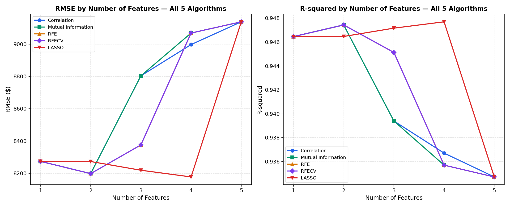
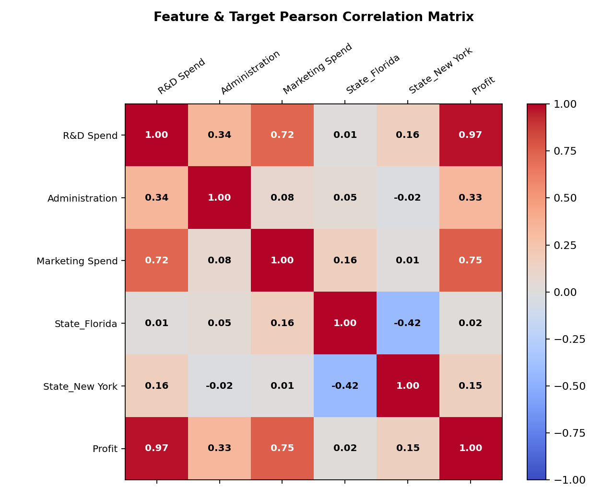
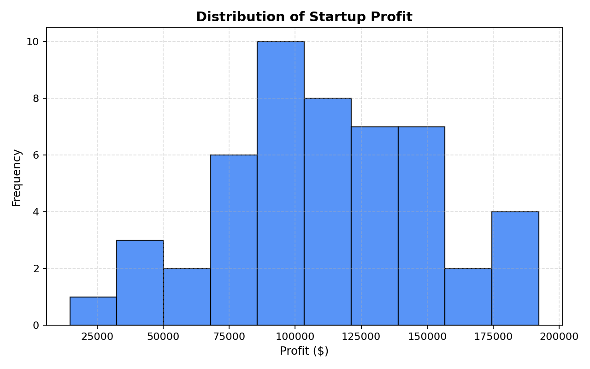
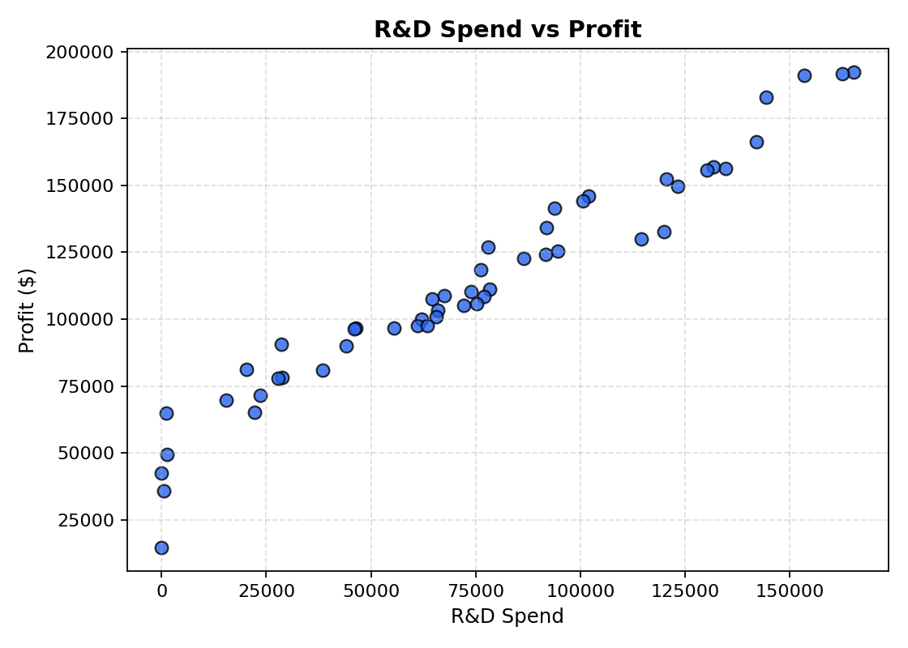
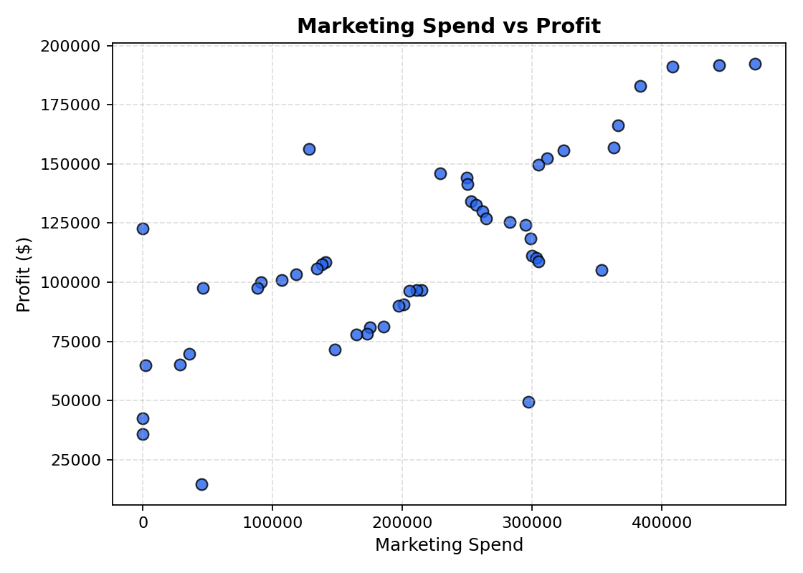
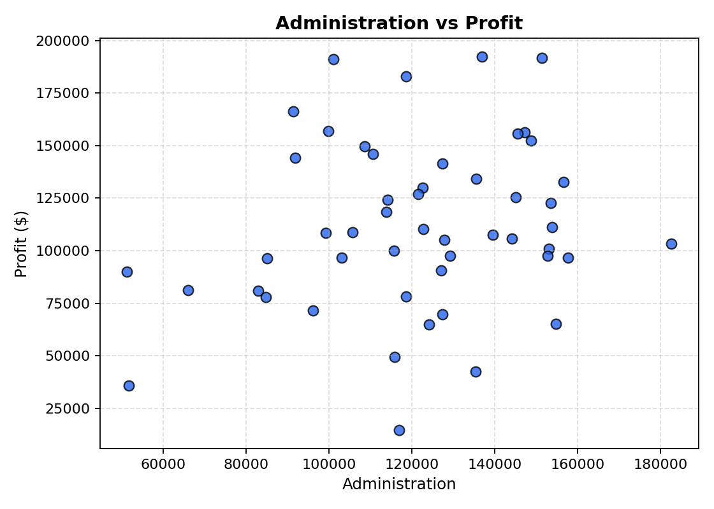
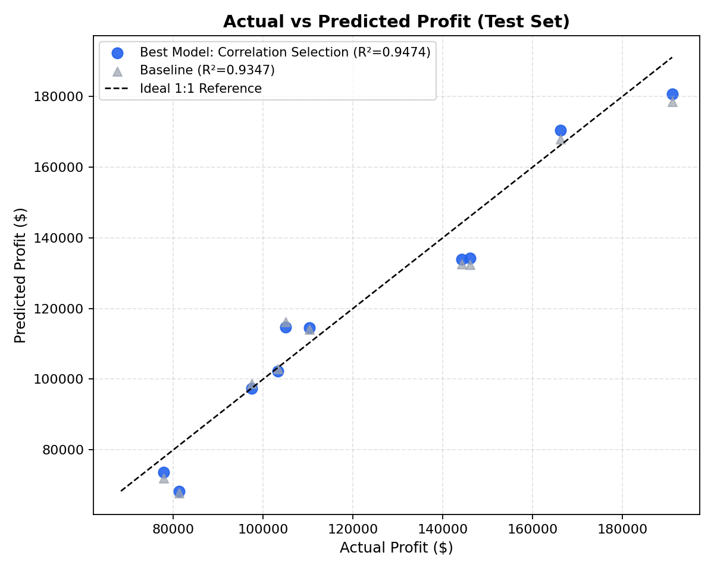
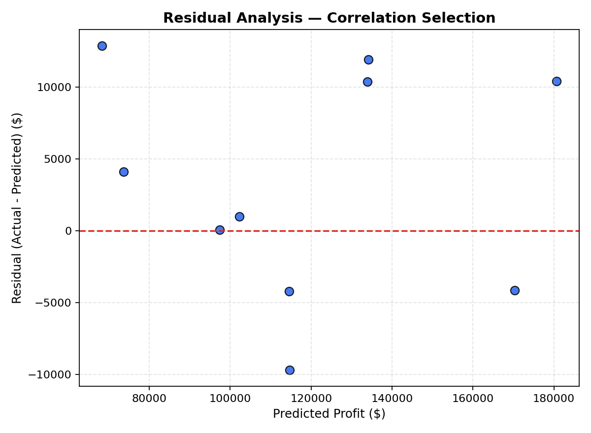
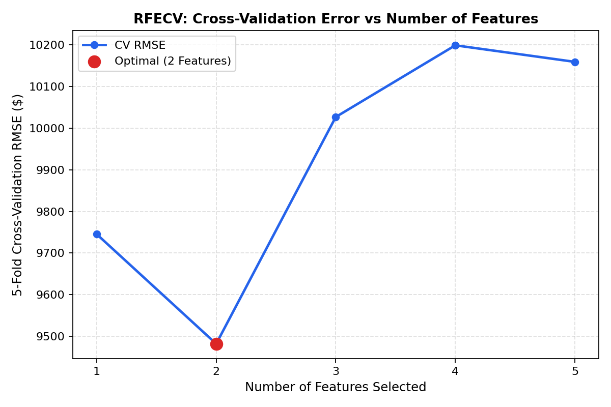
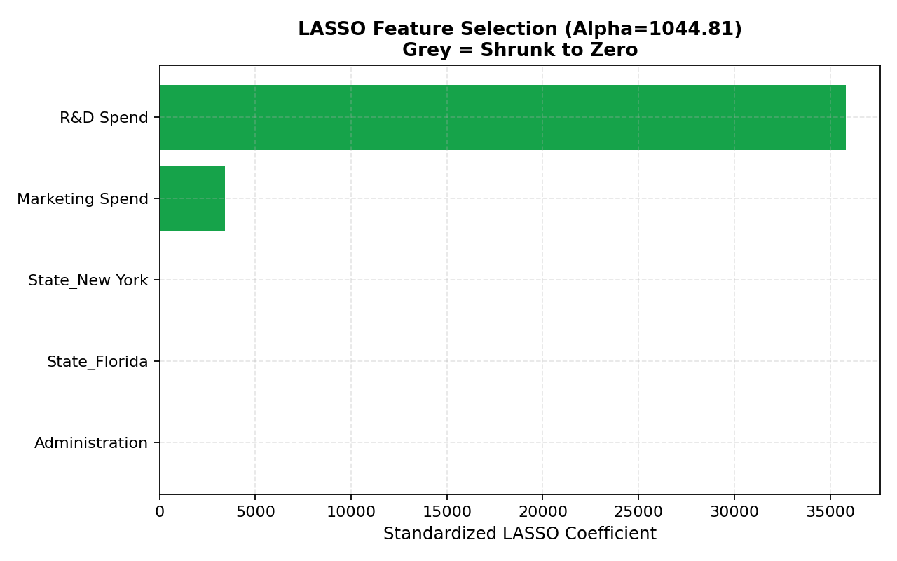

Evaluation Across 5 Feature Selection Algorithms ($k = 1$ to $5$)
Toggle between the combined comparative master analysis (1 of together) and individual algorithm progressions (5 of each).
RMSE & R-squared by Number of Features — All 5 Algorithms Combined
Combined Benchmark

Performance Metrics Table ($k = 1$ to $5$)
Sorted by Number of Features| Algorithm | Features ($k$) | Selected Feature Subset | RMSE ($) | R-squared ($R^2$) | Status |
|---|
Interactive Startup Profit Predictor
Enter expenditure details and company location to estimate annual startup profit in real-time using the deployed production pipeline.
Startup Financial Profile
Based on Correlation / RFECV selected feature subset ($R^2 = 0.9474$).
Profit = $109,446.45 + (36,426.11 × z_rd) + (4,021.92 × z_mkt)
Includes Administration and State dummy variables ($R^2 = 0.9347$).
Exploratory Data Analysis (EDA)
Inspect the underlying 50 Startups dataset, distribution curves, and Pearson correlation matrices.
Pearson Correlation Matrix

Target Profit Distribution

R&D vs Profit

Marketing vs Profit

Administration vs Profit

50 Startups Raw Dataset
| # | R&D Spend ($) | Administration ($) | Marketing Spend ($) | State | Profit ($) |
|---|
Model Validation, RFECV Curves & Diagnostics
Diagnostic verification confirming residual homoscedasticity, cross-validation minima, and LASSO shrinkage.
Actual vs Predicted Profit (Test Set)

Residual Analysis Plot

RFECV Error Curve

LASSO Coefficients (Grey = Zeroed)

Master Feature Importance & Diagnostic Scores
| Feature | Pearson $r$ | Abs Pearson $|r|$ | Mutual Information | RFE Rank | LASSO Standardized Coef | Selected by LASSO |
|---|
CRISP-DM Project Lifecycle Summary
Documentation of the 6 phases of the Cross-Industry Standard Process for Data Mining.
Business Understanding
Determine which expenditure categories drive corporate profitability in early-stage startups and eliminate noise variables to prevent overfitting.
Data Understanding
Analyze 50 startup records across 4 predictors (`R&D Spend`, `Administration`, `Marketing Spend`, `State`). Verified zero missing values and no duplicates.
Data Preparation
Stratified train/test split (80/20). Imputation with median/mode and standardization via `StandardScaler` to ensure unbiased regularization and RFE ranking.
Modeling
Constructed end-to-end scikit-learn Pipelines evaluating 5 feature selection methods: Correlation, Mutual Information, RFE, RFECV, and LASSO.
Evaluation
Demonstrated that a 2-feature model achieves optimal generalization (Test $R^2 = 0.9474$, Test RMSE = $8,198.80$), outperforming the full 5-feature baseline.
Deployment
Serialized optimal pipeline into `startup_profit_model.joblib` and deployed full interactive web dashboard live to Vercel.